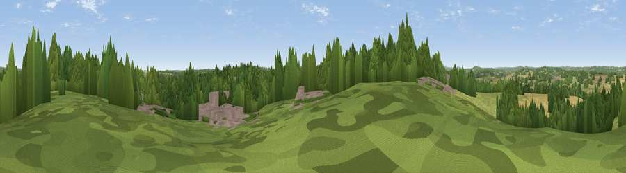

Viewpoint near Northiam
#34890 in England · top 45% of its area beats it · near NorthiamThe view, rendered

A 360° render of this exact spot computed from the terrain model, tree cover and land cover — summer colours, afternoon light, calibrated against photographs of famous viewpoints. Real trees, hedges and buildings will differ in detail.
The panorama
Grey silhouette: terrain skyline in each direction (720 bearings, Earth curvature and refraction included). Dashed green: skyline with trees (+15 m) and buildings (+8 m) as obstacles. Blue strip: how far the ground is visible on each bearing.
Where the view opens
Wedge length = distance to the farthest visible ground on that bearing (vegetation-aware). Rings at 10, 25 and 50 km.
What fills the view
37% woodland · 35% grassland · 21% cropland · 7% built-up
Angular shares of the visible panorama (visual magnitude), not map area. Landscape diversity 0.55 (0–1 Shannon).
Key numbers
More beautiful places nearby
The staircase of upgrades: each row has a higher view potential than everything closer. Driving times are estimates from straight-line distance, calibrated against real road routing — check an actual route before setting out.
| Place | Direction | Drive | Score |
|---|---|---|---|
| Viewpoint near Ewhurst Green | SW · 2 km | ~6 min | 38.6 |
| Viewpoint near Beckley | E · 3 km | ~7 min | 45.9 |
| Silver Hill | W · 8 km | ~16 min | 54.9 |
| Viewpoint near Udimore | SE · 9 km | ~18 min | 59.7 |
| Viewpoint near Stone in Oxney | E · 12 km | ~22 min | 60.1 |
| Viewpoint near Telham | SSW · 12 km | ~23 min | 62.2 |
| Viewpoint near Three Oaks | S · 13 km | ~24 min | 69.3 |
| Viewpoint near Fairlight | SSE · 14 km | ~25 min | 74.7 |
50.99796, 0.59768 · source: screening · position refined by local search. Computed location — check access rights before visiting.